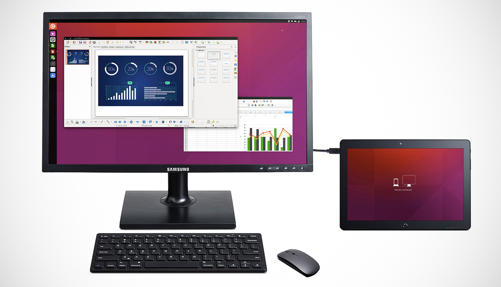
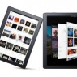
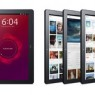
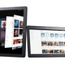
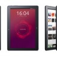
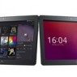
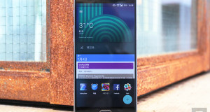

<!DOCTYPE html>
<html lang="zh-Hans" class="js no-touch cssanimations csstransforms csstransforms3d csstransitions fontface wf-proximanova1proximanova2-n3-active wf-proximanova1proximanova2-n4-active wf-proximanova1proximanova2-n6-active wf-active" style="">
<!--<![endif]--><head><div class="fit-vids-style">­</div>
	<!-- V:Permalink -->
	<meta charset="UTF-8">
	<meta http-equiv="X-UA-Compatible" content="IE=edge,chrome=1">
		<!-- AOL META -->

<meta name="viewport" content="width=device-width, initial-scale=1.0">

    <title>首款 Ubuntu 平板 Q2 开卖，能接屏幕当台机用</title>
    <meta name="description" content="不久前被西班牙厂商 BQ 拿出来预热宣传的那款 Ubuntu 平板，今天终于由 Canonical 正式公开了。如预期的一样，它是 BQ 现有 Aquaris M10 平板的 Ubuntu 版本，像是 10.1 吋屏幕、四核心联发科 MT8163A 处理器这些核心规格其实都没有变化。最大的不同，在于它能">
    
    <meta property="og:title" content="首款 Ubuntu 平板 Q2 开卖，能接屏幕当台机用">
    <meta property="og:description" content="不久前被西班牙厂商 BQ 拿出来预热宣传的那款 Ubuntu 平板，今天终于由 Canonical 正式公开了。如预期的一样，它是 BQ 现有 Aquaris M10 平板的 Ubuntu 版本，像是 10.1 吋屏幕、四核心联发科 MT8163A 处理器这些核心规格其实都没有变化。最大的不同，在于它能">
    <meta property="og:image" content="http://o.aolcdn.com/hss/storage/midas/1e4dda688bf8d61500db01b1b09f56af/203358480/convergence.jpg">
    <meta property="og:type" content="article">
    <meta property="og:url" content="http://cn.engadget.com/2016/02/05/ubuntu-m10-tablet-convergence/">
    
      <meta property="article:tag" content="aquaris">
    
      <meta property="article:tag" content="aquarism10">
    
      <meta property="article:tag" content="bq">
    
      <meta property="article:tag" content="canonical">
    
      <meta property="article:tag" content="covergence">
    
      <meta property="article:tag" content="gear">
    
      <meta property="article:tag" content="mobile">
    
      <meta property="article:tag" content="mwc">
    
      <meta property="article:tag" content="tablet">
    
      <meta property="article:tag" content="tablets">
    
      <meta property="article:tag" content="ubuntu">
    
    <meta property="article:author" content="http://cn.engadget.com/about/editors/sanji-feng/">
    <meta name="twitter:card" content="summary">
    <meta name="twitter:url" content="http://cn.engadget.com/2016/02/05/ubuntu-m10-tablet-convergence/">
    <meta name="twitter:title" content="首款 Ubuntu 平板 Q2 开卖，能接屏幕当台机用">
    <meta name="twitter:description" content="不久前被西班牙厂商 BQ 拿出来预热宣传的那款 Ubuntu 平板，今天终于由 Canonical 正式公开了。如预期的一样，它是 BQ 现有 Aquaris M10 平板的 Ubuntu 版本，像是 10.1 吋屏幕、四核心联发科 MT8163A 处理器这些核心规格其实都没有变化。最大的不同，在于它能">
    
      <meta name="twitter:image" content="http://o.aolcdn.com/hss/storage/midas/1e4dda688bf8d61500db01b1b09f56af/203358480/convergence.jpg">
    
     
    <meta name="twitter:app:name:iphone" content="Engadget for iPhone">
    <meta name="twitter:app:url:iphone" content="com.aol.engadget://cn.engadget.com/2016/02/05/ubuntu-m10-tablet-convergence/">
    <meta name="twitter:app:name:ipad" content="Engadget for iPad">
    <meta name="twitter:app:url:ipad" content="com.aol.appspinner.engadget://cn.engadget.com/2016/02/05/ubuntu-m10-tablet-convergence/">
    <meta name="twitter:app:id:googleplay" content="com.aol.mobile.engadget">
    <meta name="twitter:app:name:googleplay" content="Engadget">
    <meta name="twitter:app:url:googleplay" content="engadget://ubuntu-m10-tablet-convergence">
  
<meta property="og:site_name" content="Engadget 中国版">

<meta name="robots" content="noodp,noydir">
<link rel="canonical" href="http://cn.engadget.com/2016/02/05/ubuntu-m10-tablet-convergence/">
<!-- sv=Permalink --> 
	 
	 
	 
	<!-- M:head-global -->


        
	<!-- Fontkit -->
	
	<!-- Meta -->
	<meta name="apple-itunes-app" content="app-id=347839246">
	<meta name="p:domain_verify" content="fb69533f2acad78bdd89abf093c35a28">
	<meta name="viewport" content="width=device-width,minimum-scale=1,maximum-scale=1">
	<meta name="apple-mobile-web-app-status-bar-style" content="black">
        <meta name="application-name" content="Engadget 中国版">

	<meta name="google-site-verification" content="EPOkGJ2sGEaD-oar2l-aIR8sdhbDO6F3DMU8ulsiP5o">

	<!-- FB -->
	<meta property="og:title" content="首款 Ubuntu 平板 Q2 开卖，能接屏幕当台机用">
	<meta property="og:locale" content="zh_CN">

	<!-- RSS -->
	<link rel="alternate" type="application/rss+xml" title="Engadget" href="http://cn.engadget.com/rss.xml">

        <!-- icons -->
	<link rel="apple-touch-icon" sizes="57x57" href="http://www.blogsmithmedia.com/cn.engadget.com/media/apple-touch-icon-57x57.png">
	<link rel="apple-touch-icon" sizes="114x114" href="http://www.blogsmithmedia.com/cn.engadget.com/media/apple-touch-icon-114x114.png">
	<link rel="apple-touch-icon" sizes="72x72" href="http://www.blogsmithmedia.com/cn.engadget.com/media/apple-touch-icon-72x72.png">
	<link rel="apple-touch-icon" sizes="144x144" href="http://www.blogsmithmedia.com/cn.engadget.com/media/apple-touch-icon-144x144.png">
	<link rel="apple-touch-icon" sizes="60x60" href="http://www.blogsmithmedia.com/cn.engadget.com/media/apple-touch-icon-60x60.png">
	<link rel="apple-touch-icon" sizes="120x120" href="http://www.blogsmithmedia.com/cn.engadget.com/media/apple-touch-icon-120x120.png">
	<link rel="apple-touch-icon" sizes="76x76" href="http://www.blogsmithmedia.com/cn.engadget.com/media/apple-touch-icon-76x76.png">
	<link rel="apple-touch-icon" sizes="152x152" href="http://www.blogsmithmedia.com/cn.engadget.com/media/apple-touch-icon-152x152.png">
	<link rel="icon" type="image/png" href="favicon-16x16.png" sizes="16x16">
	<link rel="icon" type="image/png" href="favicon-32x32.png" sizes="32x32">
	<link rel="icon" type="image/png" href="favicon-96x96.png" sizes="96x96">
	<link rel="icon" type="image/png" href="favicon-160x160.png" sizes="160x160">
	<meta name="msapplication-TileColor" content="#3498db">
	<meta name="msapplication-TileImage" content="//www.blogsmithmedia.com/cn.engadget.com/media/mstile-144x144.png">
	<meta name="msapplication-square70x70logo" content="//www.blogsmithmedia.com/cn.engadget.com/media/mstile-70x70.png">
	<meta name="msapplication-square150x150logo" content="//www.blogsmithmedia.com/cn.engadget.com/media/mstile-150x150.png">
	<meta name="msapplication-wide310x150logo" content="//www.blogsmithmedia.com/cn.engadget.com/media/mstile-310x150.png">
	<meta name="msapplication-square310x310logo" content="//www.blogsmithmedia.com/cn.engadget.com/media/mstile-310x310.png">
        <meta name="apple-touch-fullscreen" content="yes">

	    <link rel="dns-prefetch" href="http://ajax.googleapis.com/">

	<!-- CSS -->
	<!--[if lte IE 8]><link rel="stylesheet" href="//www.blogsmithmedia.com/cn.engadget.com/media/style-ie.css?25"><![endif]-->
	<!--[if gt IE 8]><!--><!--<![endif]-->
	
        
	
        
	
	
	<!-- /M -->
 
	 
	 
	 
	 

<link rel="stylesheet" type="text/css" href="index.css" media="all">
</head>
<body class="with-rail fullbleed perm">

<!-- Page header -->
<div id="header">
	 
	 
	<!-- M:header-ad-banner -->
<div class="ad header-ad header-ad-banner">
	
</div>
<!-- /M --> 
	 
	<!-- Permalink -->
<!-- M:header-global -->
<header role="banner">
    <div id="nav">
        <div id="nav-flow">
            <nav class="nav container" id="nav-mini">
                <header role="banner">
		
		<h2 id="logo">
                        <a href="http://cn.engadget.com/" class="s-engadget-logo-web-over">Engadget</a>
                        <span class="edition">中国版</span>
                    </h2>
		
                    <div class="menu-link">
                        <a class="s-icn-menu" href="http://cn.engadget.com/">Menu</a>
                    </div>

                    <a style="display: none;" class="item search" href="http://cn.engadget.com/#nav-search">
                        <i class="s-search-white"></i>
                    </a>
                <section id="search-container">
                        <form target="_blank" action="http://www.sogou.com/web" class="nav" id="nav-search" method="get">
                            <div class="query">
                                <input class="query-input" id="nav-search-input" name="query" placeholder="搜索产品和文章">
				<input id="nav-search-in-site" name="insite" value="cn.engadget.com/*" type="hidden">
                                <span class="query-button"></span>
                            </div>
                        </form>
                    </section></header>
            </nav>

            <div class="nav-container-container">
                <nav class="nav container" id="nav-main">
                    <span id="logo">
                        <a href="http://cn.engadget.com/" class="s-engadget-logo-web-over">Engadget</a>
                        <span class="edition">中国版</span>
                    </span>
                    <ul>
                        <li class="news">
                            <a class="item" href="http://cn.engadget.com/">新闻</a>
                        </li>
			<li class="reviews">
                            <a class="item " href="#" id="reviews-link">分类浏览 <i class="s-icn-arw-gry-down"></i></a>
                        </li>
                        <li>
                            <a class="item " href="http://cn.engadget.com/latest-reviews/">评测</a>
                        </li>
                        <li class="features">
                            <a class="item " href="http://cn.engadget.com/features/">专题</a>
                        </li>
                        <li><a class="item " href="http://cn.engadget.com/galleries/">图集</a></li>
                        <li class="shows">
                            <a class="item " href="http://cn.engadget.com/videos/">视频</a>
                        </li>
                        <li class="more">
                            <a class="item " href="#">其他 <i class="s-icn-arw-gry-down"></i></a>
                        </li>
                    </ul>
                    
                </nav>
            </div>
        </div>
    </div>
</header>

<ul id="dropdown-more" class="nav-dropdown-items" style="display: none;">
    <li><a href="http://cn.engadget.com/rss.xml">RSS 订阅</a></li>
    <li><a href="http://cn.engadget.com/about/">关于</a></li>
    <li><a href="http://cn.engadget.com/about/tips/">爆料 | 联系我们</a>
    </li>
</ul>

<div id="mobile-dropdown-container" class="nav-dropdown-items" style="display: none;">
    <ul>
        <li><a href="http://cn.engadget.com/">新闻</a></li>
        <li>
            <a href="#" class="mobile-reviews">分类浏览 <i class="s-icn-arw-gry-down"></i></a>
            <div class="inner-dropdown" style="display: none;">
            </div>
            <div class="inner-dropdown category-icon-25" style="display: none;">
                <ul>
                    
<li><a href="http://cn.engadget.com/topics/desktops/">台式电脑</a></li>

<li><a href="http://cn.engadget.com/topics/laptops/">笔记本电脑</a></li>

<li><a href="http://cn.engadget.com/topics/mobilephones/">手机</a></li>

<li><a href="http://cn.engadget.com/topics/gaming/">游戏</a></li>

<li><a href="http://cn.engadget.com/topics/robots/">机械设备</a></li>

<li><a href="http://cn.engadget.com/topics/cameras/">相机</a></li>

<li><a href="http://cn.engadget.com/topics/software-apps/">软件应用</a></li>

<li><a href="http://cn.engadget.com/topics/networking/">网络产品</a></li>

<li><a href="http://cn.engadget.com/topics/internet/">互联网</a></li>

<li><a href="http://cn.engadget.com/topics/tablets/">平板电脑</a></li>

<li><a href="http://cn.engadget.com/topics/storage/">存储产品</a></li>

<li><a href="http://cn.engadget.com/topics/science/">科学</a></li>

<li><a href="http://cn.engadget.com/topics/pmp/">便携多媒体设备</a></li>

<li><a href="http://cn.engadget.com/topics/wearables/">佩戴产品</a></li>

<li><a href="http://cn.engadget.com/topics/fitness/">健康产品</a></li>

<li><a href="http://cn.engadget.com/topics/interviews/">采访记录</a></li>

<li><a href="http://cn.engadget.com/topics/editorials/">专栏</a></li>

<li><a href="http://cn.engadget.com/topics/transportation/">交通运输</a></li>

<li><a href="http://cn.engadget.com/topics/gps/">定位产品</a></li>

<li><a href="http://cn.engadget.com/topics/peripherals/">外围设备</a></li>

<li><a href="http://cn.engadget.com/topics/displays/">显示产品</a></li>

<li><a href="http://cn.engadget.com/topics/tv/">电视</a></li>

<li><a href="http://cn.engadget.com/topics/e-book/">电子书</a></li>

<li><a href="http://cn.engadget.com/topics/household/">家居产品</a></li>

<li><a href="http://cn.engadget.com/topics/industry/">产业</a></li>

<li><a href="http://cn.engadget.com/topics/misc-gadgets/">杂项</a></li>

<li><a href="http://cn.engadget.com/topics/announcements/">站点公告</a></li>


                </ul>
            </div>
        </li>
        <li><a href="http://cn.engadget.com/latest-reviews/">评测</a></li>
        <li><a href="http://cn.engadget.com/features/">专题</a></li>
        <li><a href="http://cn.engadget.com/videos/" class="shows">视频</a></li>
        <li><a href="http://cn.engadget.com/galleries/">图集</a></li>
        <li>
            <a href="#" class="more">其他 <i class="s-icn-arw-gry-down"></i></a>
            <ul class="inner-dropdown">
                <li><a href="http://cn.engadget.com/rss.xml">RSS 订阅</a></li>
                <li><a href="http://cn.engadget.com/about/">关于</a></li>
                <li><a href="http://cn.engadget.com/about/tips/">爆料 | 联系我们</a></li>
            </ul>
        </li>
    </ul>
</div>
<!-- COOKIE = NOT SET -->
<!-- /M:header-global-->
  
	
<div class="aside container read" id="redbar">
	<p><a href="http://cn.engadget.com/2016/07/05/juno-jupiter-arrival/">
	
		<i class="s-must-read"></i>
		<strong>不可不看: </strong>
	
	Juno 探测器顺利抵达木星，将开始为期 20 个月的科学活动</a></p>
</div>
 
	<!-- M:header-post -->
<header class="header container" itemscope="" itemtype="http://schema.org/BlogPosting">
	<h1 class="h1" itemprop="headline">首款 Ubuntu 平板 Q2 开卖，能接屏幕当台机用</h1>
	<p class="byline">
		<span class="byline-container">
			<span class="by">作者：</span>
			<a href="http://cn.engadget.com/about/editors/sanji-feng/"><strong itemprop="author">Sanji Feng</strong></a> <span class="weibo"><a href="http://weibo.com/fengsanji" target="_blank"></a></span>
			<i class="s-icn-bullet"></i>
			<span class="timeago" datetime="Fri, 05 Feb 2016 01:37:00 -0500"> 2016  年 2  月 5  日, 下午 2:37 </span>
		</span>
		
		<a class="comment-count" href="#comments"><i class="s-comment-bubble-black-12"></i><span class="ds-thread-count" data-thread-key="21308219" data-count-type="comments">8</span></a>
	</p>
</header>

<!-- /M --> 
	 
	 
</div>

<!-- Page wrapper -->
<div id="page" class="container ">
	<!-- Page body -->
	<div id="body">
		 
		 
		 
		 
		
<div class="copy post-body fullbleed" itemprop="text">
	<div style="text-align: center;"><a href="#"></a></div>

<div><br>
不久前被西班牙厂商 BQ 拿出来预热宣传的那款 <a href="http://cn.engadget.com/2016/01/21/ubuntu-linux-tablet-with-desktop-mode/">Ubuntu 平板</a>，今天终于由 Canonical 正式公开了。如预期的一样，它是 BQ 现有 Aquaris M10 平板的 Ubuntu 版本，像是 10.1 吋屏幕、四核心联发科 MT8163A 处理器这些核心规格其实都没有变化。最大的不同，在于它能依靠 Ubuntu 系统中的 Convergence 功能，连接键盘、鼠标、屏幕，为使用者带来完整的桌机体验。而这也是类似特性，首度出现在市售版的 Ubuntu 硬件之上。<br>
<div class="post-gallery">
<h3 class="title">Aquaris M10 Ubuntu Edition</h3>
<ul class="thumbs"><li class="thumb" data-count="11">
	<a class="gallery-link" href="http://cn.engadget.com/gallery/aquaris-m10-ubuntu-edition-press-shots-0/3789359/#!slide=3789359">
		
	</a>
</li>

<li class="thumb" data-count="11">
	<a class="gallery-link" href="http://cn.engadget.com/gallery/aquaris-m10-ubuntu-edition-press-shots-0/3789360/#!slide=3789360">
		
	</a>
</li>

<li class="thumb" data-count="11">
	<a class="gallery-link" href="http://cn.engadget.com/gallery/aquaris-m10-ubuntu-edition-press-shots-0/3789361/#!slide=3789361">
		
	</a>
</li>

<li class="thumb" data-count="11">
	<a class="gallery-link" href="http://cn.engadget.com/gallery/aquaris-m10-ubuntu-edition-press-shots-0/3789362/#!slide=3789362">
		
	</a>
</li>

<li class="thumb" data-count="11">
	<a class="gallery-link" href="http://cn.engadget.com/gallery/aquaris-m10-ubuntu-edition-press-shots-0/3789363/#!slide=3789363">
		
	</a>
</li>

<li class="thumb" data-count="11">
	<a class="gallery-link" href="http://cn.engadget.com/gallery/aquaris-m10-ubuntu-edition-press-shots-0/3789364/#!slide=3789364">
		
	</a>
</li>

  </ul>
  <a class="more gallery-link" href="http://cn.engadget.com/gallery/aquaris-m10-ubuntu-edition-press-shots-0">浏览所有照片</a>
  <p class="photo-number">11 张图片</p>

<div class="clear"></div>
</div>
</div> 
	<div style="padding: 5px 0px;">&nbsp;</div><a name="continued"></a>
	实际上，从很久以前开始，Canonical 就一直有在平板上发展 Ubuntu 的野心。他们曾为初代 Nexus 7 推出过 Ubuntu 安装器，之后还为 Nexus 10 准备了 Ubuntu Touch 的预览版本。所以真正的 Ubuntu 平板，经过这么长时间才姗姗来迟，老实讲，是出乎许多人意料的。而这个主打的 Convergence 功能，可以让用户以熟悉的电脑操作方式来使用设备，桌面、移动应用都能运行，想找软件的话也有专门的 App Store。<br>
<br>
等等，听到这里是不是觉得有点耳熟？微软如今在移动端的策略，不也是想借设备间的联动性（<a href="http://cn.engadget.com/2016/01/07/lumia-950-950-xl-continuum-review/">Continuum</a>）来吸引用户吗？只不过，在投入了大量的人力物力之后，真正的收效似乎并不明显。现在 Ubuntu 也选择了这条路继续走下去，前途怕是也不会轻松啊。 

	

	


<p class="read-more">
<a class="comment-count" href="#comments"><i class="s-comment-bubble-black-12"></i><span class="ds-thread-count" data-thread-key="21308219" data-count-type="comments">8</span></a>
<span class="social-tools">
  <span class="weibo-text">分享到：</span> <a class="weibo-share" href="http://service.weibo.com/share/share.php?url=http://cn.engadget.com/2016/02/05/ubuntu-m10-tablet-convergence/&amp;title=%E9%A6%96%E6%AC%BE%20Ubuntu%20%E5%B9%B3%E6%9D%BF%20Q2%20%E5%BC%80%E5%8D%96%EF%BC%8C%E8%83%BD%E6%8E%A5%E5%B1%8F%E5%B9%95%E5%BD%93%E5%8F%B0%E6%9C%BA%E7%94%A8" target="_new"></a>
</span>
			</p>
</div><!-- /.post-body -->


<div class="post-meta">
	
	<aside class="meta-sources">
               
		<span class="via"><p><strong>经由:</strong> <a href="http://www.engadget.com/2016/02/04/ubuntu-m10-tablet-convergence/" target="_blank">Engadget</a><!--//--></p></span>
		
		
               
	</aside>
        <aside class="meta-tags">
	<strong>标签:</strong> <a href="http://cn.engadget.com/tag/aquaris/">aquaris</a>, <a href="http://cn.engadget.com/tag/aquarism10/">aquarism10</a>, <a href="http://cn.engadget.com/tag/bq/">bq</a>, <a href="http://cn.engadget.com/tag/canonical/">canonical</a>, <a href="http://cn.engadget.com/tag/covergence/">covergence</a>, <a href="http://cn.engadget.com/tag/gear/">gear</a>, <a href="http://cn.engadget.com/tag/mobile/">mobile</a>, <a href="http://cn.engadget.com/tag/mwc/">mwc</a>, <a href="http://cn.engadget.com/tag/tablet/">tablet</a>, <a href="http://cn.engadget.com/tag/tablets/">tablets</a>, <a href="http://cn.engadget.com/tag/ubuntu/">ubuntu</a>
</aside>
</div><!-- /.post-meta -->

<div role="nav" id="header-post-nav" class="postnav">
	<div class="container">
	        <h5>首款 Ubuntu 平板 Q2 开卖，能接屏幕当台机用</h5>
				
		<div class="nextpost">
			<span class="next">下一篇文章: </span>
			<a href="http://cn.engadget.com/2016/02/05/instagram-multiple-accounts-ios/" class="nextlink">Instagram 新功能释出，多账户登录和... 60 秒广告 <i class="nextarrows"></i></a>
		</div>
		
	</div>
</div>


 
		<aside class="module rail-latest related-articles modCustom">
<h3 class="hed green">相关文章</h3><article class="feature">
<header class="feature-overlay">
<h3 class="feature-title"><a href="http://cn.engadget.com/2016/07/01/dell-android-tablets-discontinued/">戴尔将放弃 Android 平板，未来会专攻 Windows 二合一设备</a></h3>
<div class="meta"><time class="timeago" datetime="Fri, 01 Jul 2016 08:00:00 -0400"> 2016  年 7  月 1  日, 晚上 8:00 </time></div>
</header>
</article>
<article class="feature">
<header class="feature-overlay">
<h3 class="feature-title"><a href="http://cn.engadget.com/2016/06/27/google-live-nexus-support-app-leak/">Google 正为 Nexus 手机筹备远程客服协助功能？</a></h3>
<div class="meta"><time class="timeago" datetime="Mon, 27 Jun 2016 06:00:00 -0400"> 2016  年 6  月 27  日, 晚上 6:00 </time></div>
</header>
</article>
<article class="feature">
<header class="feature-overlay">
<h3 class="feature-title"><a href="http://cn.engadget.com/2016/06/22/vlc-2-for-android/">Android 版 VLC 播放器现支持网络播放</a></h3>
<div class="meta"><time class="timeago" datetime="Wed, 22 Jun 2016 03:04:00 -0400"> 2016  年 6  月 22  日, 下午 3:04 </time></div>
</header>
</article>
</aside> 
		<a name="comments"></a>
<!-- 多说评论框 start -->
	<div id="ds-thread" class="ds-thread " data-thread-key="21308219" data-title="首款 Ubuntu 平板 Q2 开卖，能接屏幕当台机用" data-url="http://cn.engadget.com/2016/02/05/ubuntu-m10-tablet-convergence/"><div id="ds-reset"><div style="display: none;" class="ds-meta"><a class="ds-like-thread-button ds-rounded"><span class="ds-icon ds-icon-heart"></span> <span class="ds-thread-like-text">喜欢</span><span class="ds-thread-cancel-like">取消喜欢</span></a><span class="ds-like-panel"></span></div><div class="ds-comments-info"><div class="ds-sort"><a class="ds-order-desc ds-current">最新</a><a class="ds-order-asc">最早</a><a class="ds-order-hot">最多推</a></div><ul class="ds-comments-tabs"><li class="ds-tab"><a class="ds-comments-tab-duoshuo ds-current"><span class="ds-highlight">8</span>评论</a></li> <li class="ds-tab"><a class="ds-comments-tab-weibo"><span class="ds-highlight">1</span>条新浪微博</a></li> </ul></div><ul class="ds-comments"><li class="ds-post" data-post-id="6249230938937492226"><div class="ds-post-self" data-post-id="6249230938937492226" data-thread-id="6247693213889463042" data-root-id="0" data-source="duoshuo"><div class="ds-avatar" data-user-id="6235096724935803650"><a rel="nofollow author" target="_blank" href="http://weibo.com/eisnl" title="E-xN_L"></a></div><div class="ds-comment-body"><div class="ds-comment-header"><a class="ds-user-name ds-highlight" data-qqt-account="" href="http://weibo.com/eisnl" rel="nofollow" target="_blank" data-user-id="6235096724935803650">E-xN_L</a></div><p>呃，对于品类繁多的win10平板，这货意义何在。。</p><div class="ds-comment-footer ds-comment-actions"><span class="ds-time" datetime="2016-02-09T18:07:41+08:00" title="2016年2月9日 18:07:41">2月9日</span><a class="ds-post-reply"><span class="ds-icon ds-icon-reply"></span>回复</a><a class="ds-post-likes"><span class="ds-icon ds-icon-like"></span>推(1)</a><a class="ds-post-repost"><span class="ds-icon ds-icon-share"></span>转发</a><a class="ds-post-report"><span class="ds-icon ds-icon-report"></span>举报</a></div></div></div></li><li class="ds-post" data-post-id="6248112595362906882"><div class="ds-post-self" data-post-id="6248112595362906882" data-thread-id="6247693213889463042" data-root-id="0" data-source="duoshuo"><div class="ds-avatar" data-user-id="3832490"><a rel="nofollow author" target="_blank" href="http://weibo.com/1685166960" title="Altair"></a></div><div class="ds-comment-body"><div class="ds-comment-header"><a class="ds-user-name ds-highlight" data-qqt-account="" href="http://weibo.com/1685166960" rel="nofollow" target="_blank" data-user-id="3832490">Altair</a></div><p>我是觉得挺不错，ARM Linux 可以运行的应用远远多于 Windows 10 Mobile，那货就是一废物。</p><div class="ds-comment-footer ds-comment-actions"><span class="ds-time" datetime="2016-02-06T17:47:57+08:00" title="2016年2月6日 17:47:57">2月6日</span><a class="ds-post-reply"><span class="ds-icon ds-icon-reply"></span>回复</a><a class="ds-post-likes"><span class="ds-icon ds-icon-like"></span>推</a><a class="ds-post-repost"><span class="ds-icon ds-icon-share"></span>转发</a><a class="ds-post-report"><span class="ds-icon ds-icon-report"></span>举报</a></div></div></div></li><li class="ds-post" data-post-id="6247836004690952962"><div class="ds-post-self" data-post-id="6247836004690952962" data-thread-id="6247693213889463042" data-root-id="0" data-source="duoshuo"><div class="ds-avatar" data-user-id="13986239"><a rel="nofollow author" target="_blank" href="http://www.baidu.com/p/ark12211" title="ark12211"></a></div><div class="ds-comment-body"><div class="ds-comment-header"><a class="ds-user-name ds-highlight" data-qqt-account="" href="http://www.baidu.com/p/ark12211" rel="nofollow" target="_blank" data-user-id="13986239">ark12211</a></div><p>那么能不能装KDE或者XFCE，我实在不喜欢UNITY界面</p><div class="ds-comment-footer ds-comment-actions"><span class="ds-time" datetime="2016-02-05T23:54:38+08:00" title="2016年2月5日 23:54:38">2月5日</span><a class="ds-post-reply"><span class="ds-icon ds-icon-reply"></span>回复</a><a class="ds-post-likes"><span class="ds-icon ds-icon-like"></span>推</a><a class="ds-post-repost"><span class="ds-icon ds-icon-share"></span>转发</a><a class="ds-post-report"><span class="ds-icon ds-icon-report"></span>举报</a></div></div></div></li><li class="ds-post" data-post-id="6247793034071638786"><div class="ds-post-self" data-post-id="6247793034071638786" data-thread-id="6247693213889463042" data-root-id="0" data-source="duoshuo"><div class="ds-avatar" data-user-id="6247426298524730114"><a rel="nofollow author" target="_blank" href="http://weibo.com/3266698202" title="Science_Hope"></a></div><div class="ds-comment-body"><div class="ds-comment-header"><a class="ds-user-name ds-highlight" data-qqt-account="" href="http://weibo.com/3266698202" rel="nofollow" target="_blank" data-user-id="6247426298524730114">Science_Hope</a></div><p>安卓可以就好了，这两年应该有吧，现在有usb 3.1的硬件支持</p><div class="ds-comment-footer ds-comment-actions"><span class="ds-time" datetime="2016-02-05T21:07:53+08:00" title="2016年2月5日 21:07:53">2月5日</span><a class="ds-post-reply"><span class="ds-icon ds-icon-reply"></span>回复</a><a class="ds-post-likes"><span class="ds-icon ds-icon-like"></span>推</a><a class="ds-post-repost"><span class="ds-icon ds-icon-share"></span>转发</a><a class="ds-post-report"><span class="ds-icon ds-icon-report"></span>举报</a></div></div></div></li><li class="ds-post" data-post-id="6247730777396609794"><div class="ds-post-self" data-post-id="6247730777396609794" data-thread-id="6247693213889463042" data-root-id="0" data-source="duoshuo"><div class="ds-avatar" data-user-id="14000580"><a rel="nofollow author" target="_blank" href="http://weibo.com/3901736967" title="鸡蛋木有饼"></a></div><div class="ds-comment-body"><div class="ds-comment-header"><a class="ds-user-name ds-highlight" data-qqt-account="" href="http://weibo.com/3901736967" rel="nofollow" target="_blank" data-user-id="14000580">鸡蛋木有饼</a></div><p>表示想要同样功能的Chrome OS设备  </p><div class="ds-comment-footer ds-comment-actions"><span class="ds-time" datetime="2016-02-05T17:06:18+08:00" title="2016年2月5日 17:06:18">2月5日</span><a class="ds-post-reply"><span class="ds-icon ds-icon-reply"></span>回复</a><a class="ds-post-likes"><span class="ds-icon ds-icon-like"></span>推</a><a class="ds-post-repost"><span class="ds-icon ds-icon-share"></span>转发</a><a class="ds-post-report"><span class="ds-icon ds-icon-report"></span>举报</a></div></div></div></li><li class="ds-post" data-post-id="6247703604585562881"><div class="ds-post-self" data-post-id="6247703604585562881" data-thread-id="6247693213889463042" data-root-id="0" data-source="duoshuo"><div class="ds-avatar" data-user-id="14061235"><a rel="nofollow author" target="_blank" href="http://weibo.com/zenger007" title="黄大叫兽Trojan"></a></div><div class="ds-comment-body"><div class="ds-comment-header"><a class="ds-user-name ds-highlight" data-qqt-account="" href="http://weibo.com/zenger007" rel="nofollow" target="_blank" data-user-id="14061235">黄大叫兽Trojan</a></div><p>照片里混进了什么奇怪的东西...???!!?!?!?!</p><div class="ds-comment-footer ds-comment-actions"><span class="ds-time" datetime="2016-02-05T15:20:51+08:00" title="2016年2月5日 15:20:51">2月5日</span><a class="ds-post-reply"><span class="ds-icon ds-icon-reply"></span>回复</a><a class="ds-post-likes"><span class="ds-icon ds-icon-like"></span>推</a><a class="ds-post-repost"><span class="ds-icon ds-icon-share"></span>转发</a><a class="ds-post-report"><span class="ds-icon ds-icon-report"></span>举报</a></div></div></div><ul class="ds-children"><li class="ds-post" data-post-id="6247719424975962882"><div class="ds-post-self" data-post-id="6247719424975962882" data-thread-id="6247693213889463042" data-root-id="6247703604585562881" data-source="duoshuo"><div class="ds-avatar" data-user-id="6245076753090347777"><a rel="nofollow author" target="_blank" href="http://weibo.com/zeidazhou" title="真_鲁鲁修"></a></div><div class="ds-comment-body"><div class="ds-comment-header"><a class="ds-user-name ds-highlight" data-qqt-account="" href="http://weibo.com/zeidazhou" rel="nofollow" target="_blank" data-user-id="6245076753090347777">真_鲁鲁修</a></div><p>三个男人的下半身。。<br>
  </p><div class="ds-comment-footer ds-comment-actions"><span class="ds-time" datetime="2016-02-05T16:22:15+08:00" title="2016年2月5日 16:22:15">2月5日</span><a class="ds-post-reply"><span class="ds-icon ds-icon-reply"></span>回复</a><a class="ds-post-likes"><span class="ds-icon ds-icon-like"></span>推</a><a class="ds-post-repost"><span class="ds-icon ds-icon-share"></span>转发</a><a class="ds-post-report"><span class="ds-icon ds-icon-report"></span>举报</a></div></div></div><ul class="ds-children"><li class="ds-post" data-post-id="6247900508137194241"><div class="ds-post-self" data-post-id="6247900508137194241" data-thread-id="6247693213889463042" data-root-id="6247703604585562881" data-source="duoshuo"><div class="ds-avatar" data-user-id="9072108"><a rel="nofollow author" target="_blank" href="http://weibo.com/1953997023" title="faceTeeeee"></a></div><div class="ds-comment-body"><div class="ds-comment-header"><a class="ds-user-name ds-highlight" data-qqt-account="" href="http://weibo.com/1953997023" rel="nofollow" target="_blank" data-user-id="9072108">faceTeeeee</a></div><p>真的是男人嘛！怎么有一个那么妖娆。</p><div class="ds-comment-footer ds-comment-actions"><span class="ds-time" datetime="2016-02-06T04:04:56+08:00" title="2016年2月6日 04:04:56">2月6日</span><a class="ds-post-reply"><span class="ds-icon ds-icon-reply"></span>回复</a><a class="ds-post-likes"><span class="ds-icon ds-icon-like"></span>推</a><a class="ds-post-repost"><span class="ds-icon ds-icon-share"></span>转发</a><a class="ds-post-report"><span class="ds-icon ds-icon-report"></span>举报</a></div></div></div></li></ul></li></ul></li></ul><div style="display: none;" class="ds-paginator"><div class="ds-border"></div><a data-page="1" class="ds-current">1</a></div><a name="respond"></a><div class="ds-login-buttons"><p>社交帐号登录:</p><div class="ds-social-links"><ul class="ds-service-list"><li><a href="http://engadget.duoshuo.com/login/weixin/" rel="nofollow" class="ds-service-link ds-weixin">微信</a></li><li><a href="http://engadget.duoshuo.com/login/weibo/" rel="nofollow" class="ds-service-link ds-weibo">微博</a></li><li><a href="http://engadget.duoshuo.com/login/qq/" rel="nofollow" class="ds-service-link ds-qq">QQ</a></li><li><a href="http://engadget.duoshuo.com/login/renren/" rel="nofollow" class="ds-service-link ds-renren">人人</a></li><li><a class="ds-more-services">更多»</a></li></ul><ul class="ds-service-list ds-additional-services"><li><a href="http://engadget.duoshuo.com/login/douban/" rel="nofollow" class="ds-service-link ds-douban">豆瓣</a></li><li><a href="http://engadget.duoshuo.com/login/kaixin/" rel="nofollow" class="ds-service-link ds-kaixin">开心</a></li><li><a href="http://engadget.duoshuo.com/login/baidu/" rel="nofollow" class="ds-service-link ds-baidu">百度</a></li><li><a href="http://engadget.duoshuo.com/login/google/" rel="nofollow" class="ds-service-link ds-google">谷歌</a></li></ul></div></div><div class="ds-replybox"><a class="ds-avatar"></a><form method="post"><input name="thread_id" value="6247693213889463042" type="hidden">
<input name="parent_id" value="" type="hidden">
<input name="nonce" value="578a4ba6bb0eb" type="hidden"><div class="ds-textarea-wrapper ds-rounded-top"><textarea name="message" title="Ctrl+Enter快捷提交" placeholder="说点什么吧…"></textarea><pre class="ds-hidden-text"></pre></div><div class="ds-post-toolbar"><div class="ds-post-options ds-gradient-bg"><span class="ds-sync"></span></div><button class="ds-post-button" type="submit">发布</button><div class="ds-toolbar-buttons"><a class="ds-toolbar-button ds-add-emote" title="插入表情"></a></div></div></form></div><p class="ds-powered-by"><a href="http://duoshuo.com/" target="_blank" rel="nofollow">Engadget正在使用多说</a></p></div></div>
<!-- 多说评论框 end -->
 
		 
		 
	</div>

	<!-- Rail -->
	<div style="position: relative; top: 444px;" id="rail" class="nocontent">
		<!-- M:rail-ad-topper -->


<div class="ad rail-ad rail-ad-topper">
	
</div>


<!-- /M --> 
				<!-- M:rail-collection-main -->

<div id="rail-collection-main">


<!-- M:rail-latest-stories -->
<aside class="module rail-latest">
<h3 class="hed green">专题文章</h3><article class="feature">

<a href="http://cn.engadget.com/2016/07/13/gogoro-interview-the-beginning/"></a>

<header class="feature-overlay">
<h3 class="feature-title"><a href="http://cn.engadget.com/2016/07/13/gogoro-interview-the-beginning/">Gogoro 设计专访：起点</a></h3>
<div class="meta"><time class="timeago time-stamp" datetime="Wed, 13 Jul 2016 07:04:00 -0400"> 2016  年 7  月 13  日, 晚上 7:04 </time>
</div>
</header>
</article><article class="feature">

<header class="feature-overlay">
<h3 class="feature-title"><a href="http://cn.engadget.com/2016/07/10/comments-of-the-week-16-07-10/">一周回复精选（16.07.10）：在家吸屁股还是出去抓宠物？</a></h3>
<div class="meta"><time class="timeago time-stamp" datetime="Sun, 10 Jul 2016 08:00:00 -0400"> 2016  年 7  月 10  日, 晚上 8:00 </time>
</div>
</header>
</article><article class="feature">

<header class="feature-overlay">
<h3 class="feature-title"><a href="http://cn.engadget.com/2016/07/08/oneplus-3-review/">一加手机 3 评测：三代而立</a></h3>
<div class="meta"><time class="timeago time-stamp" datetime="Fri, 08 Jul 2016 08:30:00 -0400"> 2016  年 7  月 8  日, 晚上 8:30 </time>
</div>
</header>
</article><article class="feature">

<header class="feature-overlay">
<h3 class="feature-title"><a href="http://cn.engadget.com/2016/07/08/android-apps-on-chromebooks/">Android 应用将解放 Chromebook 全部潜能</a></h3>
<div class="meta"><time class="timeago time-stamp" datetime="Fri, 08 Jul 2016 07:04:00 -0400"> 2016  年 7  月 8  日, 晚上 7:04 </time>
</div>
</header>
</article><article class="feature">

<header class="feature-overlay">
<h3 class="feature-title"><a href="http://cn.engadget.com/2016/07/07/poseidon-drowning-detection-system-hk/">香港首度引入 Poseidon 泳池遇溺侦测系统，把握黄金 10 秒</a></h3>
<div class="meta"><time class="timeago time-stamp" datetime="Thu, 07 Jul 2016 20:00:00 -0400"> 2016  年 7  月 8  日, 早上 8:00 </time>
</div>
</header>
</article><article class="feature">

<header class="feature-overlay">
<h3 class="feature-title"><a href="http://cn.engadget.com/2016/07/06/rimowa-electronic-tag/">Rimowa 行李箱内嵌电子标签，让你登机更潇洒</a></h3>
<div class="meta"><time class="timeago time-stamp" datetime="Wed, 06 Jul 2016 09:00:00 -0400"> 2016  年 7  月 6  日, 晚上 9:00 </time>
</div>
</header>
</article><article class="feature">

<header class="feature-overlay">
<h3 class="feature-title"><a href="http://cn.engadget.com/2016/07/04/samsung-galaxy-c5-review/">三星 Galaxy C5 评测：「明星」机种</a></h3>
<div class="meta"><time class="timeago time-stamp" datetime="Mon, 04 Jul 2016 10:30:00 -0400"> 2016  年 7  月 4  日, 晚上 10:30 </time>
</div>
</header>
</article></aside>
<!-- /M -->

<!-- M:rail-latest-stories -->
<aside class="module rail-latest">
<h3 class="hed green">最新评测</h3><article class="feature">

<a href="http://cn.engadget.com/2016/07/08/oneplus-3-review/"></a>

<header class="feature-overlay">
<h3 class="feature-title"><a href="http://cn.engadget.com/2016/07/08/oneplus-3-review/">一加手机 3 评测：三代而立</a></h3>
<div class="meta"><time class="timeago time-stamp" datetime="Fri, 08 Jul 2016 08:30:00 -0400"> 2016  年 7  月 8  日, 晚上 8:30 </time></div>
</header>
</article><article class="feature">

<header class="feature-overlay">
<h3 class="feature-title"><a href="http://cn.engadget.com/2016/07/04/samsung-galaxy-c5-review/">三星 Galaxy C5 评测：「明星」机种</a></h3>
<div class="meta"><time class="timeago time-stamp" datetime="Mon, 04 Jul 2016 10:30:00 -0400"> 2016  年 7  月 4  日, 晚上 10:30 </time></div>
</header>
</article><article class="feature">

<header class="feature-overlay">
<h3 class="feature-title"><a href="http://cn.engadget.com/2016/06/27/lenovo-zuk-z2-z2-pro-review/">联想 ZUK Z2、Z2 Pro 评测：双机救主</a></h3>
<div class="meta"><time class="timeago time-stamp" datetime="Mon, 27 Jun 2016 11:00:00 -0400"> 2016  年 6  月 27  日, 晚上 11:00 </time></div>
</header>
</article><article class="feature">

<header class="feature-overlay">
<h3 class="feature-title"><a href="http://cn.engadget.com/2016/06/20/xiaomi-mi-max-review/">小米 Max 评测：大屏幕，小市场</a></h3>
<div class="meta"><time class="timeago time-stamp" datetime="Mon, 20 Jun 2016 02:00:00 -0400"> 2016  年 6  月 20  日, 下午 2:00 </time></div>
</header>
</article><article class="feature">

<header class="feature-overlay">
<h3 class="feature-title"><a href="http://cn.engadget.com/2016/05/23/meizu-meilan-note-3-review/">魅蓝 Note 3 评测：不再只是「青年良品」</a></h3>
<div class="meta"><time class="timeago time-stamp" datetime="Mon, 23 May 2016 01:00:00 -0400"> 2016  年 5  月 23  日, 下午 1:00 </time></div>
</header>
</article><article class="feature">

<header class="feature-overlay">
<h3 class="feature-title"><a href="http://cn.engadget.com/2016/05/11/chromecast-audio-review/">​Chromecast Audio 评测：低成本、高品质 Wi-Fi 串流方案</a></h3>
<div class="meta"><time class="timeago time-stamp" datetime="Wed, 11 May 2016 00:00:00 -0400"> 2016  年 5  月 11  日, 中午 12:00 </time></div>
</header>
</article><article class="feature">

<header class="feature-overlay">
<h3 class="feature-title"><a href="http://cn.engadget.com/2016/05/09/huawei-p9-review/">华为 P9 评测：转折点</a></h3>
<div class="meta"><time class="timeago time-stamp" datetime="Mon, 09 May 2016 05:00:00 -0400"> 2016  年 5  月 9  日, 下午 5:00 </time></div>
</header>
</article></aside>
<!-- /M -->

<aside class="module">
<iframe class="share_self" scrolling="no" src="index_1.html" frameborder="0" height="450" width="300"></iframe>
</aside>


</div>
<!-- /M --> 
		 
		<!-- M:rail-ad-skyscraper -->


<div id="btf"></div>
<div class="ad rail-ad rail-ad-skyscraper">
	
</div>

<!-- /M --> 
		
<!-- 多说公共JS代码 start (一个网页只需插入一次) -->

<!-- 多说公共JS代码 end -->

 
	</div>
</div>

<!-- Page footer -->
<div id="footer">
	 
	 
	 
	 
	<div id="mobileaddiv"></div>
<footer>
    <div id="footer-like" class="nocontent">
        <div class="body">
            <div class="linkage">
                <h5>关于</h5>
                <ul>
                    <li><a href="http://cn.engadget.com/about/">关于 Engadget</a></li>
                    <li><a href="http://cn.engadget.com/about/contact/">联系我们</a></li>
                    <li><a href="http://cn.engadget.com/advertise/">广告合作</a></li>
                    <li><a href="http://www.engadget.com/about-our-advertising/">关于我们的广告</a></li>
                </ul>
            </div>
            <div class="linkage">
                    <h5>评測</h5>
                    <ul>
                        <li><a href="http://cn.engadget.com/latest-reviews/">产品评測</a></li>
			<li><a href="http://cn.engadget.com/tag/phone,review/">手机评測</a></li>
                    </ul>
            </div>
            <div class="linkage">
                    <h5>分享</h5>
                    <ul>
                        <li><a class="tips-link" href="http://cn.engadget.com/about/tips/">爆料！</a></li>
                    </ul>
            </div>
	<div class="linkage">
					<h5>外国活动</h5>
					<ul>
						<li><a href="http://www.engadget.com/expand/">Engadget Expand</a></li>
						<li><a href="http://www.engadget.com/engadget-live/">Engadget Live</a></li>
						
					</ul>
				</div>
            <div class="linkage">
                    <h5>热门话题</h5>
                    <ul>
                        <li><a href="http://cn.engadget.com/tag/phone/">手机</a></li>
                        <li><a href="http://cn.engadget.com/tag/tablet/">平板电脑</a></li>
                        <li><a href="http://cn.engadget.com/tag/laptop/">笔记本电脑</a></li>
                        <li><a href="http://cn.engadget.com/tag/wearable/">佩戴产品</a></li>
                    </ul>
            </div>
        </div>
    </div>
</footer>

<div id="categories-modal" class="no-sponsors" style="display: none;">
    <div class="categories-modal-right category-icon-25">
        <div class="category-columns">
            <ul class="category-list">
                
<li><a href="http://cn.engadget.com/topics/desktops/">台式电脑</a></li>

<li><a href="http://cn.engadget.com/topics/laptops/">笔记本电脑</a></li>

<li><a href="http://cn.engadget.com/topics/mobilephones/">手机</a></li>

<li><a href="http://cn.engadget.com/topics/gaming/">游戏</a></li>

<li><a href="http://cn.engadget.com/topics/robots/">机械设备</a></li>

<li><a href="http://cn.engadget.com/topics/cameras/">相机</a></li>

<li><a href="http://cn.engadget.com/topics/software-apps/">软件应用</a></li>

<li><a href="http://cn.engadget.com/topics/networking/">网络产品</a></li>

<li><a href="http://cn.engadget.com/topics/internet/">互联网</a></li>

<li><a href="http://cn.engadget.com/topics/tablets/">平板电脑</a></li>

<li><a href="http://cn.engadget.com/topics/storage/">存储产品</a></li>

<li><a href="http://cn.engadget.com/topics/science/">科学</a></li>

<li><a href="http://cn.engadget.com/topics/pmp/">便携多媒体设备</a></li>

<li><a href="http://cn.engadget.com/topics/wearables/">佩戴产品</a></li>

<li><a href="http://cn.engadget.com/topics/fitness/">健康产品</a></li>

<li><a href="http://cn.engadget.com/topics/interviews/">采访记录</a></li>

<li><a href="http://cn.engadget.com/topics/editorials/">专栏</a></li>

<li><a href="http://cn.engadget.com/topics/transportation/">交通运输</a></li>

<li><a href="http://cn.engadget.com/topics/gps/">定位产品</a></li>

<li><a href="http://cn.engadget.com/topics/peripherals/">外围设备</a></li>

<li><a href="http://cn.engadget.com/topics/displays/">显示产品</a></li>

<li><a href="http://cn.engadget.com/topics/tv/">电视</a></li>

<li><a href="http://cn.engadget.com/topics/e-book/">电子书</a></li>

<li><a href="http://cn.engadget.com/topics/household/">家居产品</a></li>

<li><a href="http://cn.engadget.com/topics/industry/">产业</a></li>

<li><a href="http://cn.engadget.com/topics/misc-gadgets/">杂项</a></li>

<li><a href="http://cn.engadget.com/topics/announcements/">站点公告</a></li>


            </ul>
        </div>
    </div>
    <div class="clear"></div> 
	 
	 
	 	
</div>

<!-- Legal, etc. -->
<div id="after-footer">
<div class="inner-footer">
	<div id="footer-language">
		<h5>Engadget International Editions</h5>
		<ul class="language">
				<li lang="en">
					<a href="http://www.engadget.com/?edition=usa" title="US">
						US
					</a>
				</li>
				<li lang="en">
					<a href="http://www.engadget.com/uk/" title="UK">
						UK
					</a>
				</li>
				<li lang="de">
					<a href="http://de.engadget.com/" title="German">
						Deutschland
					</a>
				</li>
				<li lang="es">
					<a href="http://es.engadget.com/" title="Spanish">
						Español
					</a>
				</li>
				<li lang="zh">
					<a href="http://chinese.engadget.com/" title="Traditional Chinese">
						繁體中文
					</a>
				</li>
				<li lang="ja">
					<a href="http://japanese.engadget.com/" title="Japanese">
						日本版
					</a>
				</li>
			
			</ul>		

	</div>
	<div id="footer-legal">
		<a href="http://www.aoltech.com/" class="s-aol-tech-logo">AOL Tech.</a>
		<p>
			<span>© 2016 AOL Inc.<br> 版权所有。</span>
			<a href="http://www.engadgetreprints.com/">Reprints and Permissions</a>
			<a href="http://about.aol.com/aolnetwork/aol_pp">Privacy Policy</a>
			<a href="http://legal.aol.com/TOS/">Terms of Use</a>
			<a href="http://about.aol.com/aolnetwork/trademarks">Trademarks</a>
			<a href="http://help.aol.com/">AOL A-Z Help</a>
			<a href="http://cn.engadget.com/advertise/">Advertise with Us</a>
		</p>
	</div>
</div> 
</div>

 
 
 
 
 
 
 
 

<!-- Ads -->


 


</div><div id="s2c-widget"></div><div id="s2c-widget-mask"></div><iframe src="index_2.html" id="localStorage" style="display: none; width: 0px; height: 0px;"></iframe><iframe src="index_3.html" id="adTacFr1" style="display: none; width: 0px; height: 0px;"></iframe></body>
</html>
